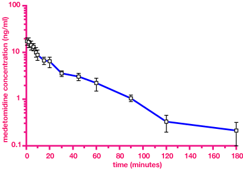
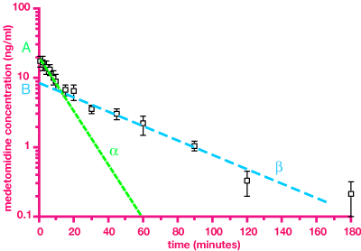

It is useful to be able to predict what a drug will do before you give it to an animal. If you have a computer with suitable software and are that way inclined you can have hours of fun fitting curves and deriving equations for plasma concentration / time curves of drugs which may help you to do this. There are a few clinically important concepts, however, which allow prediction of how long a drug is likely to stay in the plasma and thus how long it is likely to act.
There are several different ways of doing this, all of which can be taken to absurd levels of complexity. In stochastic models, drug molecules are assumed to move randomly as each is absorbed, distributed, metabolised and eliminated. Each molecule hangs around in the body for a finite length of time, thus the mean residence time (MRT) gives an idea of the time course of absorbtion and elimination. This approach requires few assumptions but the MRT is of limited usefulness.
Another approach is compartmental modelling. This requires more assumptions to be made, but if the assumptions are correct, the data is more useful. In the simplest model the animal consists of a single (purely theoretical) compartment in which drugs are quickly and evenly mixed. The volume of this compartment is the volume of distribution of the drug (Vd). The concentration of drug will fall as it is eliminated by metabolism and excretion. With most drugs, rate of elimination is directly proportional to concentration (first order kinetics). Some drugs rely on a saturable metabolic or excretion system; once this is saturated, adding more drug will make no difference, the system proceeds as fast as it can which is a fixed rate (zero order kinetics). Not many veterinary drugs do this at normal doses, phenlybutazone in the horse at some dose rates, paracetamol in the cat and phenytoin in the dog are the only obvious examples.
Left: plasma concentration / time curve, linear scale; Right: plasma concentration / time curve, semilogrithmic scale. The slope of the line in the right graph is the elimination rate constant. The time taken for the concentration to fall to half its original level is the half life (t1/2).
When a drug exhibits first order kinetics, its plasma concentration will decay exponentially. If a graph of plasma concentration is plotted on a logarithmic scale against time, the decay shows a straight line. The slope of the line is the elimination rate constant (kel). A more useful concept than kel is the half life (t1/2) which is inversely related to the elimination rate constant: t1/2 = ln 2 / kel, or, t1/2 = 0.693 / kel
The half life is the time taken for the drug concentration to be reduced to half the original concentration. This gives some idea of how long the drug remains in the plasma and thus its duration of action. (Drugs eliminated by zero order processes do not have fixed half lives.) Thus:
after 1 half life 50% of drug remains,
after 2 25%
3 12.5%
4 6.25%
5 3.125%
6 1.56%
10 0.098%, ie 99.9% has been eliminated.
For practical purposes in clinical veterinary practice, a rule of thumb is that 5 half lives must pass before effectively all of the drug is eliminated (but this may not be enough to avoid residues, see below).
Concentration time curves for repeat dosing (wavy line) or infusion (mean). A steady state is reached after about five half lives no matter what the dose.
Similarly, five half lives must pass before a change in dose results in a new steady state plasma concentration. It can be seen therefore that the time one must wait before attaining a new therapeutic plasma concentration or before attaining complete elimination of a drug is a function solely of the half life of that drug. The dose rate and the dose interval do not effect the length of time necessary to wait for attaining a new steady state plasma concentration or complete elimination.
Many drugs’ concentration/time curves are fitted to a two compartment model. Again, these compartments are purely theoretical, although they are sometimes called the central and peripheral compartments. In a two compartment model, the “curve” is fitted to two straight lines, corresponding to distribution from one compartment to the other, and elimination from the second compartment. These straight lines have slopes of a and b, and intercepts in the Y axis of A and B. These values are used in equations predicting plasma concentrations at any given time. The two lines each have a different half life, the distribution half life (t1/2a) and the elimination half life (t1/2b).
A two compartment open model which describes the behaviour of most drugs in the body.
Multiple compartment models are possible. The body is obviously not a single homoeogeneous compartment: the line produced by a semilogarithmic plasma concentration / time plot is usually a curve and can be fitted by a series of straight lines representing different compartments. It is important to keep a sense of reality: this curve is a series of points with a line interpolated, even the points are an average of several animals or several experiments in one animal (and may be of dubious accuracy depending on the measurement method used).
Left: Plasma concentration of medetomidine in sheep after iv injection of 25µg/kg at time 0. n = 12, mean ± sem. Right: The same data fitted to a two compartment model.
The graph is a typical plasma concentration time curve obtained experimentally. It is obvious that a number of different curves could be fitted to these data. In this case, the computer decided that a two compartment model gave the best fit, and the parameters were worked out on that basis.
If the object of a knowledge of pharmacokinetics is to predict what is going to happen in another animal, all the (large) variables must also be taken into account. Clinical pharmacology is still an art rather than a science.